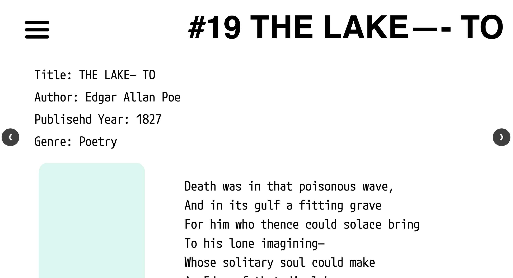

wait, did they die?
Digital
Website Design, 2024
"Wait, Did They Die?" is a collection-based webpage, inspired by fifty death scenes from literary works.
Each death is represented through a distinct color coding system, where every color symbolizes a specific emotion. This visual approach allows users to quickly grasp the emotional tone behind each death scene.
The layout of the webpage is designed to simulate the arrangement of tombstones, creating a somber and reflective atmosphere. Users can interact with each "tombstone" to uncover more details about the death scene, including its literary source and the underlying emotions, enhancing the immersive experience and deepening their connection to the narrative.
visit the website here.
Each death is represented through a distinct color coding system, where every color symbolizes a specific emotion. This visual approach allows users to quickly grasp the emotional tone behind each death scene.
The layout of the webpage is designed to simulate the arrangement of tombstones, creating a somber and reflective atmosphere. Users can interact with each "tombstone" to uncover more details about the death scene, including its literary source and the underlying emotions, enhancing the immersive experience and deepening their connection to the narrative.
visit the website here.


